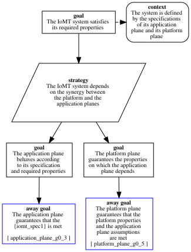

IoMT_system_g0_1
Pattern 'IoMT_system'
App_Spec : application_plane:specification = policy(iomt_spec1,[process('P1',[port(p,[],[])],[],[processor(x,[family(cpu),frequency('2GHz'),schedule(70)]),memory(z,[family(ram),size(1)])]),process('P2',[port(p,[],[])],[],[processor(x,[family(cpu),frequency('2GHz'),schedule(80)]),memory(z,[family(ram),size(5)])])],[object(o1,[],[memory(u,[family(ram),size(3)])]),object(o2,[],[memory(u,[family(ram),size(6)])])],[ipc_flow(p1p2,['P1',p],['P2',p],[],[])],[po_flow(p1o1,'P1',o1,[],[]),po_flow(p2o2,'P2',o2,[],[])],[specfilename('x.spec')],[deployment(not_same(['P1','P2']))])
Platform_Spec : platform_plane:platform = platform(iomt_platform1,[node(node1,[memory(ram,[family(ram),size(16),alignment(4)]),memory(disk,[family(disk),size(1024)])],[processor(cpu0,[family(cpu),frequency('2GHz'),schedule(100)]),processor(cpu1,[family(cpu),frequency('2GHz'),schedule(100)]),processor(cpu2,[family(cpu),frequency('2GHz'),schedule(100)]),processor(cpu3,[family(cpu),frequency('2GHz'),schedule(100)])],[device(es,[port(pt1,[type(pt1)])],[family(tsn_card),schedule(100)])],[],[os(linux)]),node(node2,[memory(ram,[family(ram),size(16),alignment(1)]),memory(disk,[family(disk),size(1024)])],[processor(cpu0,[family(cpu),frequency('2GHz'),schedule(100)]),processor(cpu1,[family(cpu),frequency('2GHz'),schedule(100)]),processor(cpu2,[family(cpu),frequency('2GHz'),schedule(100)]),processor(cpu3,[family(cpu),frequency('2GHz'),schedule(100)])],[device(es,[port(pt1,[type(pt1)])],[family(tsn_card),schedule(100)])],[],[os(linux)])],[switch(sw0,[port(pt1,[]),port(pt2,[])],[])],[phylink(f1,[node1,es,pt1],[sw0,pt1],[length('2m'),media(copper)]),phylink(f2,[node2,es,pt1],[sw0,pt2],[length('2m'),media(copper)])],[specfilename(...)])
GSN Representation

Error Log